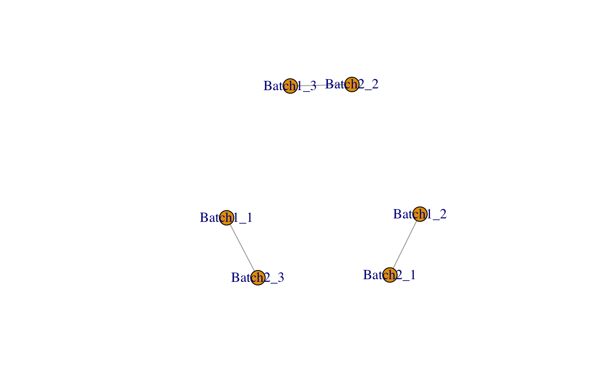
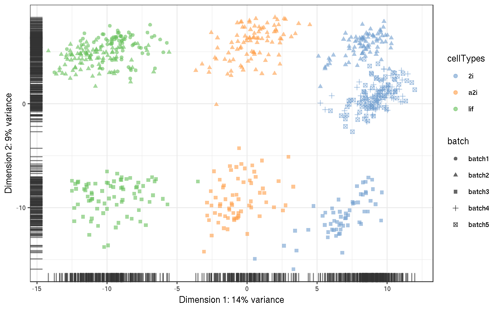
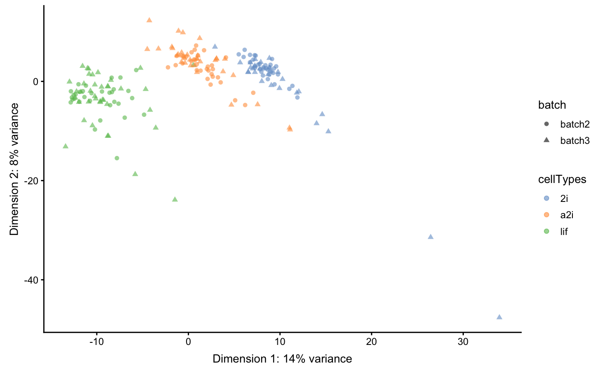

Merge single-cell RNA-seq data from different batches and experiments leveraging (pseudo)-replicates and control genes.
scMerge(sce_combine, ctl = NULL, kmeansK = NULL, exprs = "logcounts", hvg_exprs = "counts", marker = NULL, marker_list = NULL, ruvK = 20, replicate_prop = 0.5, cell_type = NULL, cell_type_match = FALSE, cell_type_inc = NULL, fast_svd = FALSE, rsvd_prop = 0.1, dist = "cor", WV = NULL, WV_marker = NULL, parallel = FALSE, parallelParam = NULL, return_all_RUV = FALSE, assay_name = NULL, verbose = FALSE)
| sce_combine | A |
|---|---|
| ctl | A character vector of negative control. It should have a non-empty intersection with the rows of sce_combine. |
| kmeansK | A vector indicates the kmeans's K for each batch. The length of kmeansK needs to be the same as the number of batch. |
| exprs | A string indicating the name of the assay requiring batch correction in sce_combine, default is logcounts. |
| hvg_exprs | A string indicating the assay that to be used for highly variable genes identification in sce_combine, default is counts. |
| marker | An optional vector of markers, to be used in calculation of mutual nearest cluster. If no markers input, highly variable genes will be used instead. |
| marker_list | An optional list of markers for each batch, which will be used in calculation of mutual nearest cluster. |
| ruvK | An optional integer/vector indicating the number of unwanted variation factors that are removed, default is 20. |
| replicate_prop | A number indicating the ratio of cells that are included in pseudo-replicates, ranges from 0 to 1. |
| cell_type | An optional vector indicating the cell type information for each cell in the batch-combined matrix. If it is |
| cell_type_match | An optional logical input for whether to find mutual nearest cluster using cell type information. |
| cell_type_inc | An optional vector indicating the indices of the cells that will be used to supervise the pseudo-replicate procedure. |
| fast_svd | If |
| rsvd_prop | If |
| dist | The distance metrics that are used in the calculation of the mutual nearest cluster, default is Pearson correlation. |
| WV | A optional vector indicating the wanted variation factor other than cell type info, such as cell stages. |
| WV_marker | An optional vector indicating the markers of the wanted variation. |
| parallel | If |
| parallelParam | The |
| return_all_RUV | If |
| assay_name | The assay name(s) for the adjusted expression matrix(matrices). If |
| verbose | If |
Returns a SingleCellExperiment object with following components:
assays: the original assays and also the normalised matrix
metadata: containing the ruvK vector, ruvK_optimal based on F-score, and the replicate matrix
## Loading example data data('example_sce', package = 'scMerge') ## Previously computed stably expressed genes data('segList_ensemblGeneID', package = 'scMerge') ## Running an example data with minimal inputs sce_mESC <- scMerge( sce_combine = example_sce, ctl = segList_ensemblGeneID$mouse$mouse_scSEG, kmeansK = c(3, 3), assay_name = 'scMerge')#>#> group batch cluster #> 1 3 1 1 #> 2 3 2 3 #> 3 1 1 2 #> 4 1 2 2 #> 5 2 1 3 #> 6 2 2 1 #> Dimension of the replicates mapping matrix: #> [1] 200 105#>#>scater::plotPCA(sce_mESC, colour_by = 'cellTypes', shape = 'batch', run_args = list(exprs_values = 'logcounts'))scater::plotPCA(sce_mESC, colour_by = 'cellTypes', shape = 'batch', run_args = list(exprs_values = 'scMerge'))